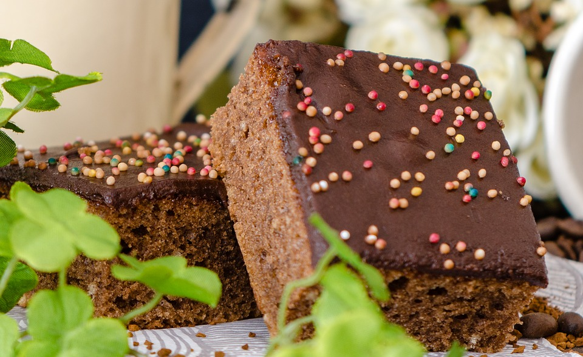

Ingredientes:
Para el bizcocho:
- 250g de azúcar blanco
- 2 huevos
- 160 ml de aceite de girasol
8- 170g de mantequilla
200ml de leche
- Azúcar avainillado (a gusto)
- 250g de harina
- 130g de cacao puro
- a cucharadita de sal
- 100ml de agua caliente
- 1 sobre de levadura
Para la crema:
- 2 taza de manteqilla a tempertaura ambiente
- 2 taza de azucar glas
- 1 cucharada de leche
- 1 cucharada de aroma liquido de vainilla
- Colorante artificial (opcional)
